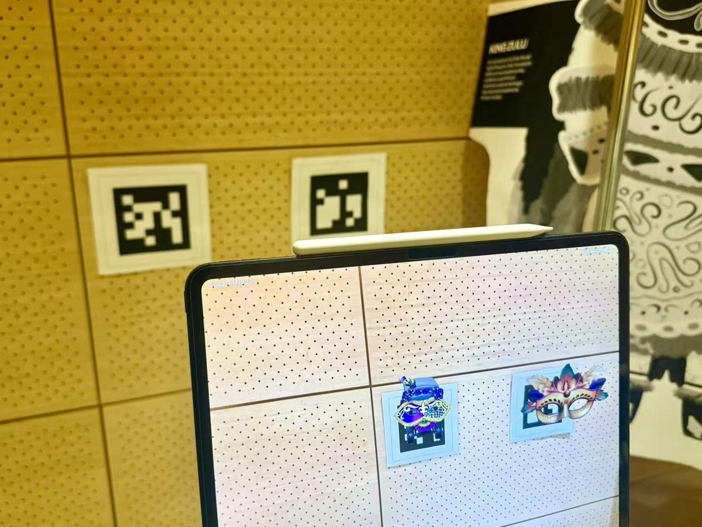
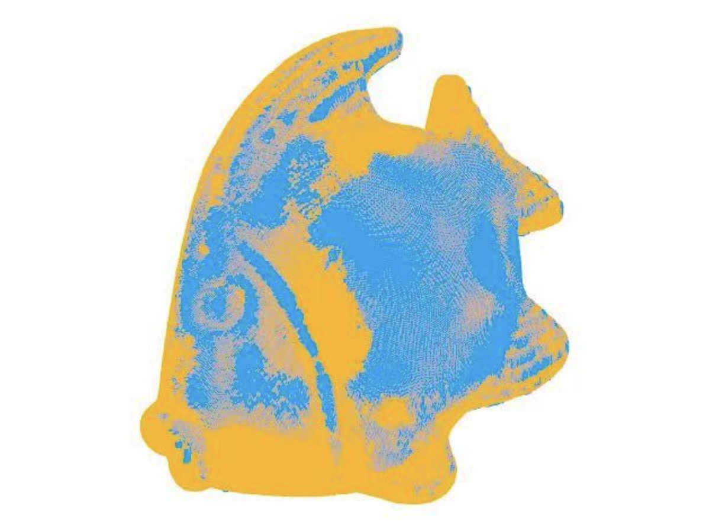
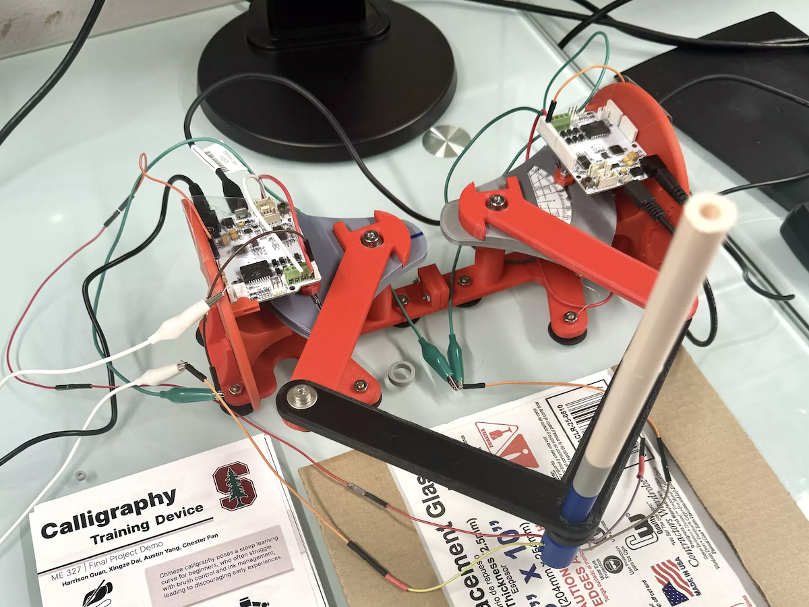
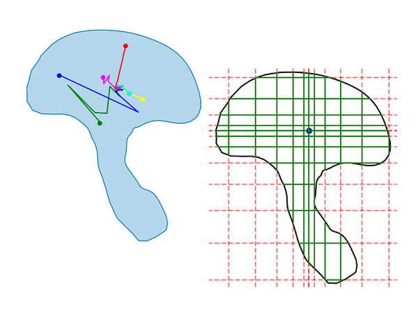
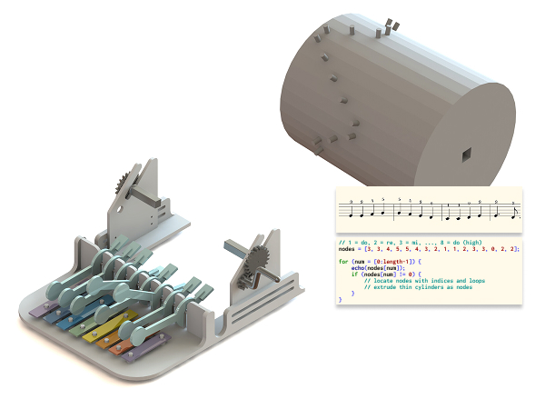
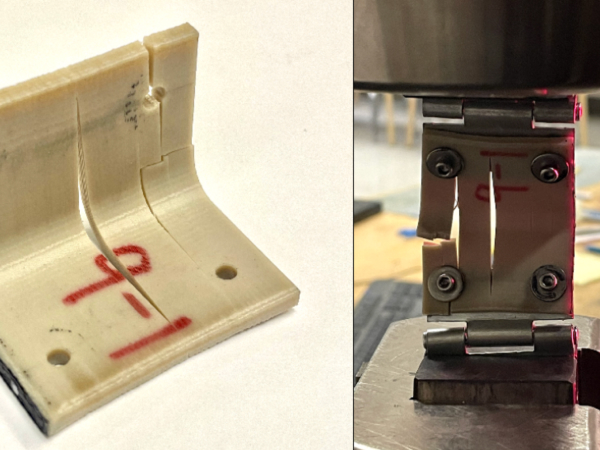

Something about projects?

ARKit · OpenCV · Pose Tracking
2026

3D Computer Vision · Deep Learning
2025
Accessibility · Game Development

Haptics · Robotics
2024

Optimization Algorithms

Computational Modeling · 3D Printing

3D Printing · Mechanics
2022 - 2023